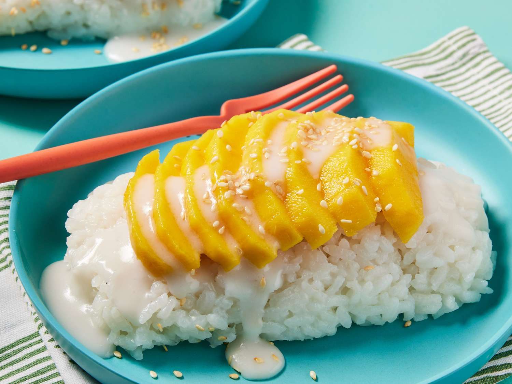

Ingredients
- 1 cup sticky rice
- 1 can coconut milk
- 3 tbsp sugar
- 1/2 tsp salt
- 2 ripe mangoes
- Sesame seeds for garnish

Steps
- Soak sticky rice in water for 4-5 hours or overnight.
- Steam the rice for 20 minutes until soft and sticky.
- Heat coconut milk, sugar, and salt in a saucepan. Do not boil.
- Mix half of the coconut milk with the cooked sticky rice and let it sit for 15 minutes.
- Slice mangoes into thin pieces.
- Serve sticky rice with mango slices and drizzle with the remaining coconut milk. Garnish with sesame seeds.